<!DOCTYPE html>
<html lang="en">
  <head>
    <meta charset="utf-8" />
    <meta name="viewport" content="width=device-width, initial-scale=1.0, maximum-scale=1.0, user-scalable=no" />

    <title></title>
    <link rel="stylesheet" href="dist/reveal.css" />
    <link rel="stylesheet" href="dist/theme/iph.css" id="theme" />
    <link rel="stylesheet" href="plugin/highlight/spyder.css" />
	<link rel="stylesheet" href="css/layout.css" />
	<link rel="stylesheet" href="plugin/customcontrols/style.css">


    <script defer src="dist/fontawesome/all.min.js"></script>

	<script type="text/javascript">
		var forgetPop = true;
		function onPopState(event) {
			if(forgetPop){
				forgetPop = false;
			} else {
				parent.postMessage(event.target.location.href, "app://obsidian.md");
			}
        }
		window.onpopstate = onPopState;
		window.onmessage = event => {
			if(event.data == "reload"){
				window.document.location.reload();
			}
			forgetPop = true;
		}

		function fitElements(){
			const itemsToFit = document.getElementsByClassName('fitText');
			for (const item in itemsToFit) {
				if (Object.hasOwnProperty.call(itemsToFit, item)) {
					var element = itemsToFit[item];
					fitElement(element,1, 1000);
					element.classList.remove('fitText');
				}
			}
		}

		function fitElement(element, start, end){

			let size = (end + start) / 2;
			element.style.fontSize = `${size}px`;

			if(Math.abs(start - end) < 1){
				while(element.scrollHeight > element.offsetHeight){
					size--;
					element.style.fontSize = `${size}px`;
				}
				return;
			}

			if(element.scrollHeight > element.offsetHeight){
				fitElement(element, start, size);
			} else {
				fitElement(element, size, end);
			}		
		}


		document.onreadystatechange = () => {
			fitElements();
			if (document.readyState === 'complete') {
				if (window.location.href.indexOf("?export") != -1){
					parent.postMessage(event.target.location.href, "app://obsidian.md");
				}
				if (window.location.href.indexOf("print-pdf") != -1){
					let stateCheck = setInterval(() => {
						clearInterval(stateCheck);
						window.print();
					}, 250);
				}
			}
	};


        </script>
  </head>
  <body>
    <div class="reveal">
      <div class="slides"><section  data-markdown><script type="text/template"><!-- .slide: class="has-light-background drop" data-background-color="#f8f8f8" -->
<div class="" style="position: absolute; left: 0px; top: 0px; height: 700px; width: 960px; min-height: 700px; display: flex; flex-direction: column; align-items: center; justify-content: center" absolute="true">

### <i class="fas fa-award"></i> IP Honores

 ####  *Laboratorio 2 de Nivel 2 - N2-L2*

[Eduardo Rosales](mailto:ee.rosales24@uniandes.edu.co)

Departamento de Ingeniería de Sistemas y Computación

Universidad de los Andes
</div></script></section><section  data-markdown><script type="text/template"><!-- .slide: class="has-light-background drop" data-background-color="#f8f8f8" -->
<div class="" style="position: absolute; left: 0px; top: 0px; height: 700px; width: 960px; min-height: 700px; display: flex; flex-direction: column; align-items: center; justify-content: center" absolute="true">

### Objetivos

1. Afianzar la comprensión de los strings y sus operaciones
</div></script></section><section  data-markdown><script type="text/template"><!-- .slide: class="has-light-background drop" data-background-color="#f8f8f8" -->
<div class="" style="position: absolute; left: 0px; top: 0px; height: 700px; width: 960px; min-height: 700px; display: flex; flex-direction: column; align-items: center; justify-content: center" absolute="true">

###  Siga paso a paso las siguientes instrucciones
</div></script></section><section  data-markdown><script type="text/template"><!-- .slide: class="has-light-background drop" data-background-color="#f8f8f8" -->
<div class="" style="position: absolute; left: 0px; top: 0px; height: 700px; width: 960px; min-height: 700px; display: flex; flex-direction: column; align-items: center; justify-content: center" absolute="true">

### Trabajo individual

- Este laboratorio es
	- **Completamente individual**<!-- .element: class="fragment highlight-blue" -->

	<br>

- El tiempo para terminar el laboratorio es muy corto
	- Por favor:
		- Evite las distracciones
		- Guarde **silencio**<!-- .element: class="fragment highlight-blue" -->

	<br>

- Si no termina el laboratorio
	- Debe finalizarlo (**y comprenderlo**) 
		- En las 5h
			- De trabajo individual semanal

	<br>

- Próximo martes:
	- Tercer **quiz** de N2 <!-- .element: class="fragment highlight-red" -->
		- Será el día martes 15 de septiembre
			- Sobre los métodos de los strings y su inmutabilidad
</div></script></section><section  data-markdown><script type="text/template"><!-- .slide: class="has-light-background drop" data-background-color="#f8f8f8" -->
<div class="" style="position: absolute; left: 0px; top: 0px; height: 700px; width: 960px; min-height: 700px; display: flex; flex-direction: column; align-items: center; justify-content: center" absolute="true">

### Preguntas

- En caso de dudas, por favor:

<br> 

1. Formule su pregunta de forma **muy clara y concisa**

<br>

2. Luego (**y solo luego de esto**)
	- Levante la mano

<br>

<i class="fas fa-question-circle fa-1x fa-spin fa-1x"></i> _Al plantearse correctamente la pregunta, la respuesta a veces se revela sola_
</div></script></section><section  data-markdown><script type="text/template"><!-- .slide: class="has-light-background drop" data-background-color="#f8f8f8" -->
<div class="" style="position: absolute; left: 0px; top: 0px; height: 700px; width: 960px; min-height: 700px; display: flex; flex-direction: column; align-items: center; justify-content: center" absolute="true">

#  Actividad I

- **Objetivos:**
	- Conocer más métodos de los strings
</div></script></section><section  data-markdown><script type="text/template"><!-- .slide: class="has-light-background drop" data-background-color="#f8f8f8" -->
<div class="" style="position: absolute; left: 0px; top: 0px; height: 700px; width: 960px; min-height: 700px; display: flex; flex-direction: column; align-items: center; justify-content: center" absolute="true">

### Strings:  Conceptos nuevos

  <br>

- Comprenda muy bien 
	- Los **NUEVOS** conceptos explicados a continuación

<br>

- Tómese su tiempo para **leer cuidadosamente**<!-- .element: class="fragment highlight-blue" -->
	- Revise las respuestas a las preguntas hechas
</div></script></section><section  data-markdown><script type="text/template"><!-- .slide: class="has-light-background drop" data-background-color="#f8f8f8" -->
<div class="" style="position: absolute; left: 0px; top: 0px; height: 700px; width: 960px; min-height: 700px; display: flex; flex-direction: column; align-items: center; justify-content: center" absolute="true">

### ¿Cómo saber la longitud o tamaño de un string?
</div></script></section><section  data-markdown><script type="text/template"><!-- .slide: class="has-light-background drop" data-background-color="#f8f8f8" -->
<div class="" style="position: absolute; left: 0px; top: 0px; height: 700px; width: 960px; min-height: 700px; display: flex; flex-direction: column; align-items: center; justify-content: center" absolute="true">

### `len()`

- Retorna la longitud (tamaño) de un objeto    
- Sintaxis: 
```Python
len(objeto)
```

- Compatible con múltiples objetos
    - Por ejemplo **strings**
- Ayuda: [len](https://docs.python.org/3/library/functions.html#len)
</div></script></section><section  data-markdown><script type="text/template"><!-- .slide: class="has-light-background drop" data-background-color="#f8f8f8" -->
<div class="" style="position: absolute; left: 0px; top: 0px; height: 700px; width: 960px; min-height: 700px; display: flex; flex-direction: column; align-items: center; justify-content: center" absolute="true">

### `len()` - Ejemplos

```Python
len('')  # → 0 (string vacío)

len('Python')  # → 6 (`Python` tiene 6 caracteres)

len('Hello World!')  # → 12 (Los espacios son caracteres)
```
</div></script></section><section  data-markdown><script type="text/template"><!-- .slide: class="has-light-background drop" data-background-color="#f8f8f8" -->
<div class="" style="position: absolute; left: 0px; top: 0px; height: 700px; width: 960px; min-height: 700px; display: flex; flex-direction: column; align-items: center; justify-content: center" absolute="true">

### Pregunta I


- ¿Cuál es el resultado de ejecutar la siguiente expresión?
```Python
print(len("IP Honores"))
```
</div></script></section><section  data-markdown><script type="text/template"><!-- .slide: class="has-light-background drop" data-background-color="#f8f8f8" -->
<div class="" style="position: absolute; left: 0px; top: 0px; height: 700px; width: 960px; min-height: 700px; display: flex; flex-direction: column; align-items: center; justify-content: center" absolute="true">

### Pregunta I - Solución


```python
print(len("IP Honores"))  # → 10
```
</div></script></section><section  data-markdown><script type="text/template"><!-- .slide: class="has-light-background drop" data-background-color="#f8f8f8" -->
<div class="" style="position: absolute; left: 0px; top: 0px; height: 700px; width: 960px; min-height: 700px; display: flex; flex-direction: column; align-items: center; justify-content: center" absolute="true">

### Operadores de pertenencia (o membresía) (1/2)

- `in`
- Sintaxis:
```Python
x in s
```
- `x`: elemento a buscar
- `s`: secuencia dentro de la cual buscar
- `x in s` : devuelve `True` 
    - Si se encuentra `x` en `s`
    - Caso contrario `False`
</div></script></section><section  data-markdown><script type="text/template"><!-- .slide: class="has-light-background drop" data-background-color="#f8f8f8" -->
<div class="" style="position: absolute; left: 0px; top: 0px; height: 700px; width: 960px; min-height: 700px; display: flex; flex-direction: column; align-items: center; justify-content: center" absolute="true">

### Operadores de pertenencia (o membresía) (2/2)

-  `not in`
- Sintaxis:
```Python
x not in s
```
- `x`: elemento a buscar
- `s`: secuencia dentro de la cual buscar
- `x not in s` : devuelve `True`
    - Si no se encuentra `x` en `s`
    - Caso contrario `False`
</div></script></section><section  data-markdown><script type="text/template"><!-- .slide: class="has-light-background drop" data-background-color="#f8f8f8" -->
<div class="" style="position: absolute; left: 0px; top: 0px; height: 700px; width: 960px; min-height: 700px; display: flex; flex-direction: column; align-items: center; justify-content: center" absolute="true">

### Operadores de pertenencia (o membresía) - Ejemplos

```Python
# Asumir ejecución secuencial de cada línea:
frase = '¡Python es divertido!'
' ' in frase  # → True
'!' in frase  # → True
'divertido' in frase  # → True
'z' in frase  # → False
'z' not in frase  # → True
'a' not in frase  # → True
''  in frase  # → True (siempre es True)
```
</div></script></section><section  data-markdown><script type="text/template"><!-- .slide: class="has-light-background drop" data-background-color="#f8f8f8" -->
<div class="" style="position: absolute; left: 0px; top: 0px; height: 700px; width: 960px; min-height: 700px; display: flex; flex-direction: column; align-items: center; justify-content: center" absolute="true">

### Pregunta II


- ¿Cuál es el resultado de ejecutar la siguiente expresión?
```Python
"Honores" in "IP Honores"
```
</div></script></section><section  data-markdown><script type="text/template"><!-- .slide: class="has-light-background drop" data-background-color="#f8f8f8" -->
<div class="" style="position: absolute; left: 0px; top: 0px; height: 700px; width: 960px; min-height: 700px; display: flex; flex-direction: column; align-items: center; justify-content: center" absolute="true">

### Pregunta I - Solución


```python
"Honores" in "IP Honores"  # → True
```
</div></script></section><section  data-markdown><script type="text/template"><!-- .slide: class="has-light-background drop" data-background-color="#f8f8f8" -->
<div class="" style="position: absolute; left: 0px; top: 0px; height: 700px; width: 960px; min-height: 700px; display: flex; flex-direction: column; align-items: center; justify-content: center" absolute="true">

### Pregunta III


- ¿Cuál es el resultado de ejecutar la siguiente expresión?
```Python
" " in "IP Honores"
```
</div></script></section><section  data-markdown><script type="text/template"><!-- .slide: class="has-light-background drop" data-background-color="#f8f8f8" -->
<div class="" style="position: absolute; left: 0px; top: 0px; height: 700px; width: 960px; min-height: 700px; display: flex; flex-direction: column; align-items: center; justify-content: center" absolute="true">

### Pregunta III- Solución


```python
" " in "IP Honores"  # → True
```
</div></script></section><section  data-markdown><script type="text/template"><!-- .slide: class="has-light-background drop" data-background-color="#f8f8f8" -->
<div class="" style="position: absolute; left: 0px; top: 0px; height: 700px; width: 960px; min-height: 700px; display: flex; flex-direction: column; align-items: center; justify-content: center" absolute="true">

### Pregunta IV


- ¿Cuál es el resultado de ejecutar la siguiente expresión?
```Python
"" in "IP Honores"
```
</div></script></section><section  data-markdown><script type="text/template"><!-- .slide: class="has-light-background drop" data-background-color="#f8f8f8" -->
<div class="" style="position: absolute; left: 0px; top: 0px; height: 700px; width: 960px; min-height: 700px; display: flex; flex-direction: column; align-items: center; justify-content: center" absolute="true">

### Pregunta IV - Solución


```python
"" in "IP Honores"  # → True
```
</div></script></section><section  data-markdown><script type="text/template"><!-- .slide: class="has-light-background drop" data-background-color="#f8f8f8" -->
<div class="" style="position: absolute; left: 0px; top: 0px; height: 700px; width: 960px; min-height: 700px; display: flex; flex-direction: column; align-items: center; justify-content: center" absolute="true">

### Pregunta V


- ¿Cuál es el resultado de ejecutar la siguiente expresión?
```Python
"Deshonores" in "IP Honores"
```
</div></script></section><section  data-markdown><script type="text/template"><!-- .slide: class="has-light-background drop" data-background-color="#f8f8f8" -->
<div class="" style="position: absolute; left: 0px; top: 0px; height: 700px; width: 960px; min-height: 700px; display: flex; flex-direction: column; align-items: center; justify-content: center" absolute="true">

### Pregunta V - Solución


```python
"Deshonores" in "IP Honores"  # → False
```
</div></script></section><section  data-markdown><script type="text/template"><!-- .slide: class="has-light-background drop" data-background-color="#f8f8f8" -->
<div class="" style="position: absolute; left: 0px; top: 0px; height: 700px; width: 960px; min-height: 700px; display: flex; flex-direction: column; align-items: center; justify-content: center" absolute="true">

### Lea MUY cuidadosamente la descripción de las siguientes operaciones de `str`
</div></script></section><section  data-markdown><script type="text/template"><!-- .slide: class="has-light-background drop" data-background-color="#f8f8f8" -->
<div class="" style="position: absolute; left: 0px; top: 0px; height: 700px; width: 960px; min-height: 700px; display: flex; flex-direction: column; align-items: center; justify-content: center" absolute="true">

### `str.format()`

- Formateo de strings
    - Con marcadores de posición 
        - Para expresiones
- Sintaxis: 
```Python
 'string {}'.format(expresion)
```
- `expresion` se evalúa en tiempo de ejecución
- Compatible con **cualquier versión** de Python
- Soporta el formateo de decimales
- Ayuda:  [format](https://docs.python.org/3/library/stdtypes.html#str.format)
</div></script></section><section  data-markdown><script type="text/template"><!-- .slide: class="has-light-background drop" data-background-color="#f8f8f8" -->
<div class="" style="position: absolute; left: 0px; top: 0px; height: 700px; width: 960px; min-height: 700px; display: flex; flex-direction: column; align-items: center; justify-content: center" absolute="true">

#### `str.format()` - Ejemplos

```Python
print('Result: {}'.format(5))  # → 'Result: 5'

print('{} + {} = {}'.format(20, 30, 20 + 30))  # → '20 + 30 = 50'
# `(20, 30, 20 + 30)` se resuelve en tiempo de ejecución

print('{} / {} = {:.2f}'.format(1, 3, 1 / 3))  # → '1 / 3 = 0.33
# `{:.2f}` se formatea, usando dos decimales
```
</div></script></section><section  data-markdown><script type="text/template"><!-- .slide: class="has-light-background drop" data-background-color="#f8f8f8" -->
<div class="" style="position: absolute; left: 0px; top: 0px; height: 700px; width: 960px; min-height: 700px; display: flex; flex-direction: column; align-items: center; justify-content: center" absolute="true">

### Pregunta VI


- ¿Cuál es el resultado de ejecutar la siguiente expresión?
```Python
print('{}/{} = {:.2f}'.format(9, 2, 9 / 2))
```
</div></script></section><section  data-markdown><script type="text/template"><!-- .slide: class="has-light-background drop" data-background-color="#f8f8f8" -->
<div class="" style="position: absolute; left: 0px; top: 0px; height: 700px; width: 960px; min-height: 700px; display: flex; flex-direction: column; align-items: center; justify-content: center" absolute="true">

### Pregunta VI - Solución


```python
print('{}/{} = {:.2f}'.format(9, 2, 9 / 2))  
# → 9 /2 = 4.50
```

<br> 

- Aquí,  `str.format()` obliga la aparición del cero (`4.50`)
</div></script></section><section  data-markdown><script type="text/template"><!-- .slide: class="has-light-background drop" data-background-color="#f8f8f8" -->
<div class="" style="position: absolute; left: 0px; top: 0px; height: 700px; width: 960px; min-height: 700px; display: flex; flex-direction: column; align-items: center; justify-content: center" absolute="true">

###  f-strings
    
- Formateo de strings usando una 
    - Expresión embebida (integrada)
- Sintaxis:
```Python
 f'string {expresion}'
```

- `expresion` se evalúa en tiempo de ejecución
- Soporta formateo de decimales
- Introducida **a partir de Python 3.6**
	- En IP Honores
		- **Preferimos esta opción**
- Ayuda: [f-strings ](https://docs.python.org/3/tutorial/inputoutput.html#tut-f-strings)
</div></script></section><section  data-markdown><script type="text/template"><!-- .slide: class="has-light-background drop" data-background-color="#f8f8f8" -->
<div class="" style="position: absolute; left: 0px; top: 0px; height: 700px; width: 960px; min-height: 700px; display: flex; flex-direction: column; align-items: center; justify-content: center" absolute="true">

###  f-strings - Ejemplos

```Python
print(f'Result: {5}')  # → 'Result: 5'
print(f'{20} + {30} = {20 + 30}')  # → '20 + 30 = 50'   
print(f'{1} / {3} = {1 / 3:.2f}')  # → '1 / 3 = 0.33'
```
</div></script></section><section  data-markdown><script type="text/template"><!-- .slide: class="has-light-background drop" data-background-color="#f8f8f8" -->
<div class="" style="position: absolute; left: 0px; top: 0px; height: 700px; width: 960px; min-height: 700px; display: flex; flex-direction: column; align-items: center; justify-content: center" absolute="true">

### Pregunta VII


- ¿Cuál es el resultado de ejecutar la siguiente expresión?
```Python
print(f'{11}/{2} = {11 / 2:.2f}')
```
</div></script></section><section  data-markdown><script type="text/template"><!-- .slide: class="has-light-background drop" data-background-color="#f8f8f8" -->
<div class="" style="position: absolute; left: 0px; top: 0px; height: 700px; width: 960px; min-height: 700px; display: flex; flex-direction: column; align-items: center; justify-content: center" absolute="true">

### Pregunta VII - Solución


```python
print(f'{11}/{2} = {11 / 2:.2f}')
# → 11/2 = 5.50
```

<br> 

- Aquí, `f-string` obliga la aparición del cero (`5.50`)
</div></script></section><section  data-markdown><script type="text/template"><!-- .slide: class="has-light-background drop" data-background-color="#f8f8f8" -->
<div class="" style="position: absolute; left: 0px; top: 0px; height: 700px; width: 960px; min-height: 700px; display: flex; flex-direction: column; align-items: center; justify-content: center" absolute="true">

### `str.lower()`

- Retorna una copia del string original 
	- En minúsculas 
- Se usa para hacer comparaciones 
	- Sin importar mayúsculas y minúsculas
- Ayuda:  [str.lower](https://docs.python.org/3/library/stdtypes.html#str.lower)
</div></script></section><section  data-markdown><script type="text/template"><!-- .slide: class="has-light-background drop" data-background-color="#f8f8f8" -->
<div class="" style="position: absolute; left: 0px; top: 0px; height: 700px; width: 960px; min-height: 700px; display: flex; flex-direction: column; align-items: center; justify-content: center" absolute="true">

### `str.lower()` - Ejemplos

```Python
'abcd'.lower()  # → 'abcd'

'ABCD'.lower()  # → 'abcd'

''.lower()  # → '' (String vacíos permanecen sin cambios)

'ABCD#%'.lower()  # → 'abcd#%': los símbolos no son afectados

'XYZ'.lower() == 'xyz'  # → True
```
</div></script></section><section  data-markdown><script type="text/template"><!-- .slide: class="has-light-background drop" data-background-color="#f8f8f8" -->
<div class="" style="position: absolute; left: 0px; top: 0px; height: 700px; width: 960px; min-height: 700px; display: flex; flex-direction: column; align-items: center; justify-content: center" absolute="true">

### `str.upper()`

- Retorna una copia del string original
	- En mayúsculas 
- Se usa para hacer comparaciones 
	- Sin importar mayúsculas o minúsculas
- Ayuda:  [str.upper](https://docs.python.org/3/library/stdtypes.html#str.upper)
</div></script></section><section  data-markdown><script type="text/template"><!-- .slide: class="has-light-background drop" data-background-color="#f8f8f8" -->
<div class="" style="position: absolute; left: 0px; top: 0px; height: 700px; width: 960px; min-height: 700px; display: flex; flex-direction: column; align-items: center; justify-content: center" absolute="true">

### `str.upper()` - Ejemplos

```Python
'ABCD'.upper()  # → 'ABCD'

'abcd'.upper()  # → 'ABCD'

''.upper()  # → '' (String vacíos permanecen sin cambios)

'abcd&'.upper()  # → 'ABCD&' (Los símbolos no son afectados)

'xyz'.upper() == 'XYZ'  # → True
```
</div></script></section><section  data-markdown><script type="text/template"><!-- .slide: class="has-light-background drop" data-background-color="#f8f8f8" -->
<div class="" style="position: absolute; left: 0px; top: 0px; height: 700px; width: 960px; min-height: 700px; display: flex; flex-direction: column; align-items: center; justify-content: center" absolute="true">

### `str.title()`

- Retorna una copia del string original 
	- En formato de _título_:
		- La primera letra en mayúscula
			- El resto en minúsculas
- Se usa para formatear títulos y encabezados
- Ayuda: [str.title](https://docs.python.org/3/library/stdtypes.html#str.title)
</div></script></section><section  data-markdown><script type="text/template"><!-- .slide: class="has-light-background drop" data-background-color="#f8f8f8" -->
<div class="" style="position: absolute; left: 0px; top: 0px; height: 700px; width: 960px; min-height: 700px; display: flex; flex-direction: column; align-items: center; justify-content: center" absolute="true">

### `str.title()` - Ejemplos


```Python
'ab cd'.title()  # → 'Ab Cd' (Sólo iniciales afectadas)

'python is fun'.title()  # → 'Python Is Fun'

'PYTHON IS FUN'.title()  # → 'Python Is Fun'

''.title()  # → '' (Strings vacíos permanecen sin cambios)

'HI jOHN&'.title()  # → 'Hi John&' (Los símbolos no se afectan)

```
</div></script></section><section  data-markdown><script type="text/template"><!-- .slide: class="has-light-background drop" data-background-color="#f8f8f8" -->
<div class="" style="position: absolute; left: 0px; top: 0px; height: 700px; width: 960px; min-height: 700px; display: flex; flex-direction: column; align-items: center; justify-content: center" absolute="true">

### `str.swapcase()`
    
- Retorna una copia del string original 
	- Con mayúsculas convertidas a minúsculas y viceversa
- Ayuda: [str.swapcase](https://docs.python.org/3/library/stdtypes.html#str.swapcase)
</div></script></section><section  data-markdown><script type="text/template"><!-- .slide: class="has-light-background drop" data-background-color="#f8f8f8" -->
<div class="" style="position: absolute; left: 0px; top: 0px; height: 700px; width: 960px; min-height: 700px; display: flex; flex-direction: column; align-items: center; justify-content: center" absolute="true">

### `str.swapcase()` - Ejemplos
   

```Python
'abCD'.swapcase()  # → 'ABcd' (Cambia mayúsculas por minúsculas y viceversa)  

'Python Is Fun'.swapcase()  # → 'pYTHON iS fUN'

'PYTHON IS FUN'.swapcase()  # → 'python is fun'

''.swapcase()  # → '' (String vacíos permanecen sin cambios)

'123abc'.swapcase()  # → '123ABC' (Los dígitos permanecen sin cambios)

```
</div></script></section><section  data-markdown><script type="text/template"><!-- .slide: class="has-light-background drop" data-background-color="#f8f8f8" -->
<div class="" style="position: absolute; left: 0px; top: 0px; height: 700px; width: 960px; min-height: 700px; display: flex; flex-direction: column; align-items: center; justify-content: center" absolute="true">

### `str.count()`

- Retorna el número de ocurrencias (`int`)
	- De un substring dado
- Sintaxis: 
```Python
string.count(substring, start, end)
```
- `substring`: Substring que se busca
- `start`: Inicio de búsqueda (opcional: `0`)
- `end`: Fin de búsqueda (opcional: Fin del string)
- Retorna `0`  si no encuentra el substring
- Ayuda:  [str.count](https://docs.python.org/3/library/stdtypes.html#str.count)
</div></script></section><section  data-markdown><script type="text/template"><!-- .slide: class="has-light-background drop" data-background-color="#f8f8f8" -->
<div class="" style="position: absolute; left: 0px; top: 0px; height: 700px; width: 960px; min-height: 700px; display: flex; flex-direction: column; align-items: center; justify-content: center" absolute="true">

### `str.count()` - Ejemplos

```Python
'banana'.count('a')  # → 3

'ban ana'.count('a')  # → 3

'banana'.count('z')  # → 0
```
</div></script></section><section  data-markdown><script type="text/template"><!-- .slide: class="has-light-background drop" data-background-color="#f8f8f8" -->
<div class="" style="position: absolute; left: 0px; top: 0px; height: 700px; width: 960px; min-height: 700px; display: flex; flex-direction: column; align-items: center; justify-content: center" absolute="true">

### Conozcamos más sobre los strings
</div></script></section><section  data-markdown><script type="text/template"><!-- .slide: class="has-light-background drop" data-background-color="#f8f8f8" -->
<div class="" style="position: absolute; left: 0px; top: 0px; height: 700px; width: 960px; min-height: 700px; display: flex; flex-direction: column; align-items: center; justify-content: center" absolute="true">

### Los strings son **secuencias**
</div></script></section><section  data-markdown><script type="text/template"><!-- .slide: class="has-light-background drop" data-background-color="#f8f8f8" -->
<div class="" style="position: absolute; left: 0px; top: 0px; height: 700px; width: 960px; min-height: 700px; display: flex; flex-direction: column; align-items: center; justify-content: center" absolute="true">

### Tipos de datos escalares 

- Representan un único valor
- No son divisibles en componentes más pequeños 
    - Dentro del contexto de su tipo
- Tipos comunes incluyen: `int`, `float`, `bool`
- Utilizados para realizar operaciones 
    - Matemáticas
    - Lógicas y 
    - De comparación
</div></script></section><section  data-markdown><script type="text/template"><!-- .slide: class="has-light-background drop" data-background-color="#f8f8f8" -->
<div class="" style="position: absolute; left: 0px; top: 0px; height: 700px; width: 960px; min-height: 700px; display: flex; flex-direction: column; align-items: center; justify-content: center" absolute="true">

### Tipos de datos secuenciales o estructurados

- Representan una colección ordenada de ítems
- Pueden ser divididos en componentes 
    - Más pequeños (ítems o elementos)
- Tipos comunes incluyen: `str`, `list`, `tuple`
- Soportan operaciones específicas
    - Sobre toda la secuencia o sobre elementos puntuales
</div></script></section><section  data-markdown><script type="text/template"><!-- .slide: class="has-light-background drop" data-background-color="#f8f8f8" -->
<div class="" style="position: absolute; left: 0px; top: 0px; height: 700px; width: 960px; min-height: 700px; display: flex; flex-direction: column; align-items: center; justify-content: center" absolute="true">

### Iterable

- Objeto capaz de retornar a sus elementos
    - Uno a la vez
- Más sobre iterables después en el curso…
</div></script></section><section  data-markdown><script type="text/template"><!-- .slide: class="has-light-background drop" data-background-color="#f8f8f8" -->
<div class="" style="position: absolute; left: 0px; top: 0px; height: 700px; width: 960px; min-height: 700px; display: flex; flex-direction: column; align-items: center; justify-content: center" absolute="true">

### Secuencia

- Iterable especial que soporta
    - Indexación 
    - Cálculo de longitud

- Secuencias integradas comunes: 
    - Strings, listas, rangos, tuplas
</div></script></section><section  data-markdown><script type="text/template"><!-- .slide: class="has-light-background drop" data-background-color="#f8f8f8" -->
<div class="" style="position: absolute; left: 0px; top: 0px; height: 700px; width: 960px; min-height: 700px; display: flex; flex-direction: column; align-items: center; justify-content: center" absolute="true">

### Índice: 

- Identificador posicional único 
    - Para un elemento de la secuencia
- Las secuencias tienen *índice cero*
    - El primer elemento está en el índice 0 
        - No en 1
</div></script></section><section  data-markdown><script type="text/template"><!-- .slide: class="has-light-background drop" data-background-color="#f8f8f8" -->
<div class="" style="position: absolute; left: 0px; top: 0px; height: 700px; width: 960px; min-height: 700px; display: flex; flex-direction: column; align-items: center; justify-content: center" absolute="true">

### Índices - Funcionamiento

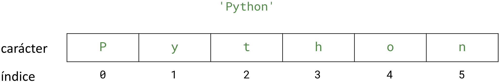
</div></script></section><section  data-markdown><script type="text/template"><!-- .slide: class="has-light-background drop" data-background-color="#f8f8f8" -->
<div class="" style="position: absolute; left: 0px; top: 0px; height: 700px; width: 960px; min-height: 700px; display: flex; flex-direction: column; align-items: center; justify-content: center" absolute="true">

### Indexación

- Acceso específico por posición 
    - A elementos de una secuencia 
        - Mediante un índice
- Sintaxis: 
```Python 
secuencia[índice_positivo] 
ó 
secuencia[índice_negativo]
```
- *Indexación positiva*: 
    - Usada para acceder desde el principio
- *Indexación negativa*: 
    - Usada para acceder desde el final
</div></script></section><section  data-markdown><script type="text/template"><!-- .slide: class="has-light-background drop" data-background-color="#f8f8f8" -->
<div class="" style="position: absolute; left: 0px; top: 0px; height: 700px; width: 960px; min-height: 700px; display: flex; flex-direction: column; align-items: center; justify-content: center" absolute="true">

### Comprendamos la indexación positiva
</div></script></section><section  data-markdown><script type="text/template"><!-- .slide: class="has-light-background drop" data-background-color="#f8f8f8" -->
<div class="" style="position: absolute; left: 0px; top: 0px; height: 700px; width: 960px; min-height: 700px; display: flex; flex-direction: column; align-items: center; justify-content: center" absolute="true">

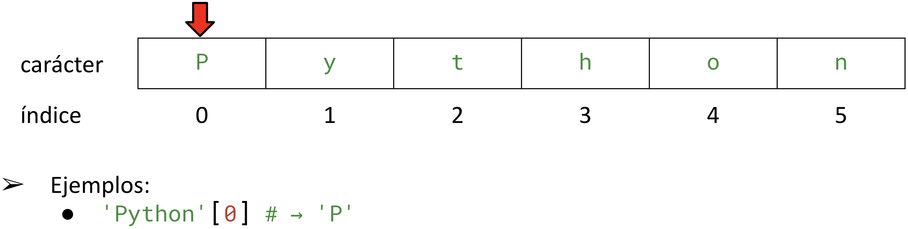
</div></script></section><section  data-markdown><script type="text/template"><!-- .slide: class="has-light-background drop" data-background-color="#f8f8f8" -->
<div class="" style="position: absolute; left: 0px; top: 0px; height: 700px; width: 960px; min-height: 700px; display: flex; flex-direction: column; align-items: center; justify-content: center" absolute="true">

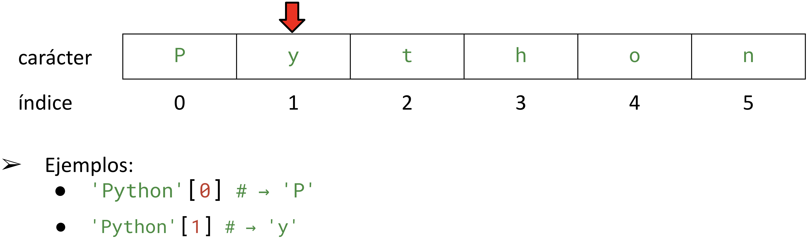
</div></script></section><section  data-markdown><script type="text/template"><!-- .slide: class="has-light-background drop" data-background-color="#f8f8f8" -->
<div class="" style="position: absolute; left: 0px; top: 0px; height: 700px; width: 960px; min-height: 700px; display: flex; flex-direction: column; align-items: center; justify-content: center" absolute="true">

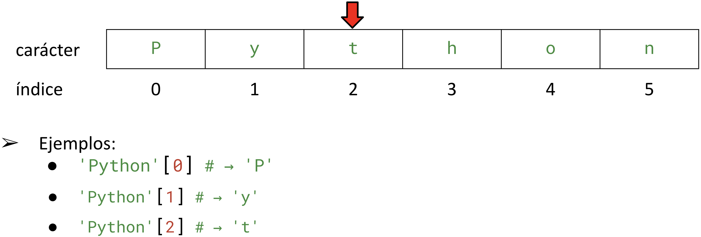
</div></script></section><section  data-markdown><script type="text/template"><!-- .slide: class="has-light-background drop" data-background-color="#f8f8f8" -->
<div class="" style="position: absolute; left: 0px; top: 0px; height: 700px; width: 960px; min-height: 700px; display: flex; flex-direction: column; align-items: center; justify-content: center" absolute="true">

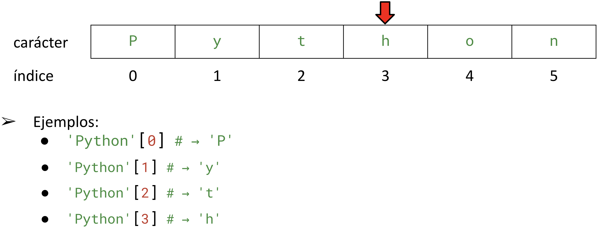
</div></script></section><section  data-markdown><script type="text/template"><!-- .slide: class="has-light-background drop" data-background-color="#f8f8f8" -->
<div class="" style="position: absolute; left: 0px; top: 0px; height: 700px; width: 960px; min-height: 700px; display: flex; flex-direction: column; align-items: center; justify-content: center" absolute="true">

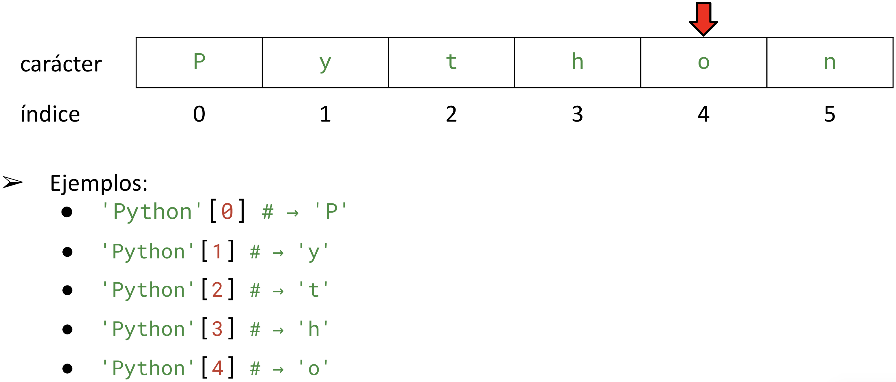
</div></script></section><section  data-markdown><script type="text/template"><!-- .slide: class="has-light-background drop" data-background-color="#f8f8f8" -->
<div class="" style="position: absolute; left: 0px; top: 0px; height: 700px; width: 960px; min-height: 700px; display: flex; flex-direction: column; align-items: center; justify-content: center" absolute="true">

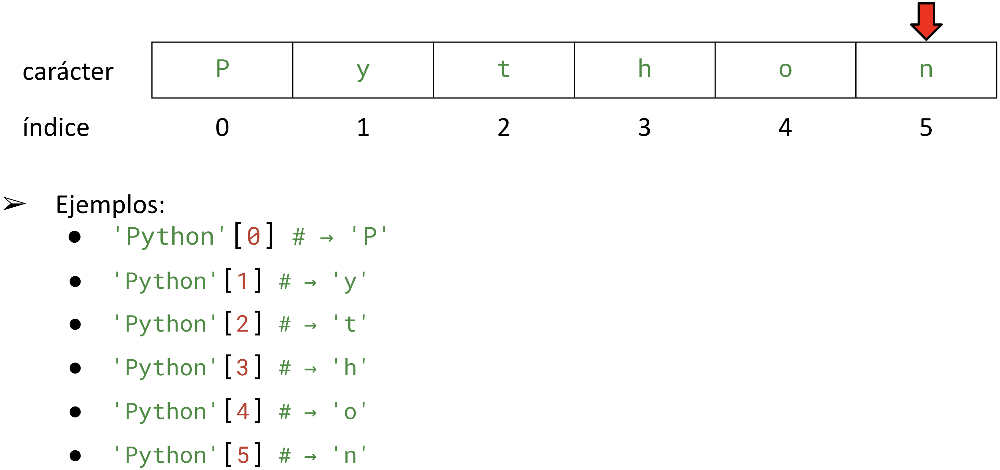
</div></script></section><section  data-markdown><script type="text/template"><!-- .slide: class="has-light-background drop" data-background-color="#f8f8f8" -->
<div class="" style="position: absolute; left: 0px; top: 0px; height: 700px; width: 960px; min-height: 700px; display: flex; flex-direction: column; align-items: center; justify-content: center" absolute="true">

### Comprendamos la indexación negativa
</div></script></section><section  data-markdown><script type="text/template"><!-- .slide: class="has-light-background drop" data-background-color="#f8f8f8" -->
<div class="" style="position: absolute; left: 0px; top: 0px; height: 700px; width: 960px; min-height: 700px; display: flex; flex-direction: column; align-items: center; justify-content: center" absolute="true">

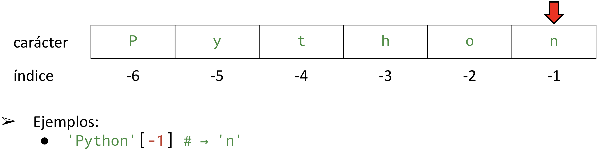
</div></script></section><section  data-markdown><script type="text/template"><!-- .slide: class="has-light-background drop" data-background-color="#f8f8f8" -->
<div class="" style="position: absolute; left: 0px; top: 0px; height: 700px; width: 960px; min-height: 700px; display: flex; flex-direction: column; align-items: center; justify-content: center" absolute="true">

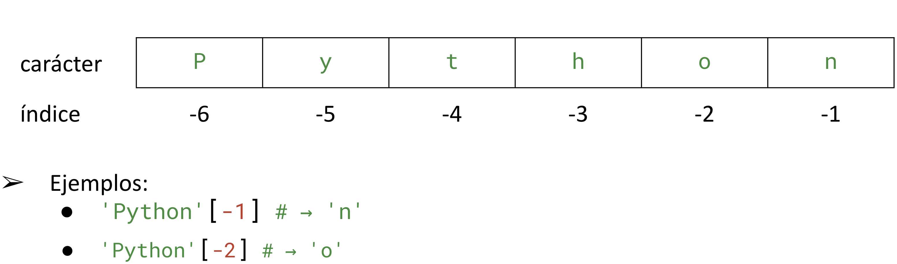
</div></script></section><section  data-markdown><script type="text/template"><!-- .slide: class="has-light-background drop" data-background-color="#f8f8f8" -->
<div class="" style="position: absolute; left: 0px; top: 0px; height: 700px; width: 960px; min-height: 700px; display: flex; flex-direction: column; align-items: center; justify-content: center" absolute="true">

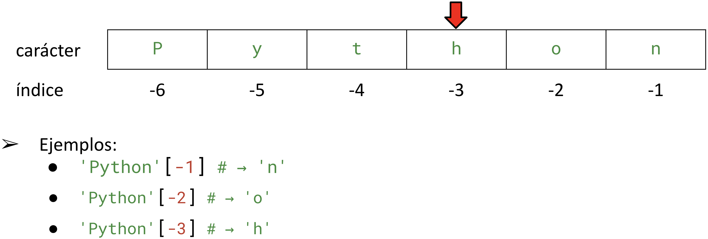
</div></script></section><section  data-markdown><script type="text/template"><!-- .slide: class="has-light-background drop" data-background-color="#f8f8f8" -->
<div class="" style="position: absolute; left: 0px; top: 0px; height: 700px; width: 960px; min-height: 700px; display: flex; flex-direction: column; align-items: center; justify-content: center" absolute="true">

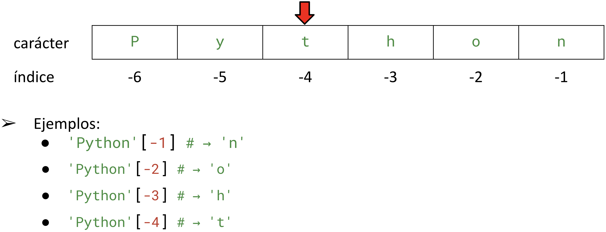
</div></script></section><section  data-markdown><script type="text/template"><!-- .slide: class="has-light-background drop" data-background-color="#f8f8f8" -->
<div class="" style="position: absolute; left: 0px; top: 0px; height: 700px; width: 960px; min-height: 700px; display: flex; flex-direction: column; align-items: center; justify-content: center" absolute="true">

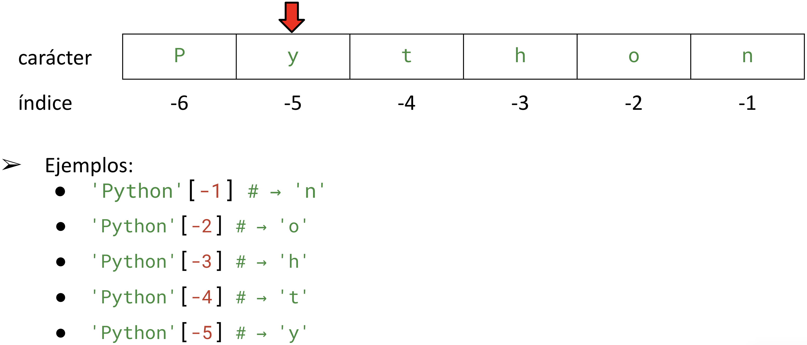
</div></script></section><section  data-markdown><script type="text/template"><!-- .slide: class="has-light-background drop" data-background-color="#f8f8f8" -->
<div class="" style="position: absolute; left: 0px; top: 0px; height: 700px; width: 960px; min-height: 700px; display: flex; flex-direction: column; align-items: center; justify-content: center" absolute="true">

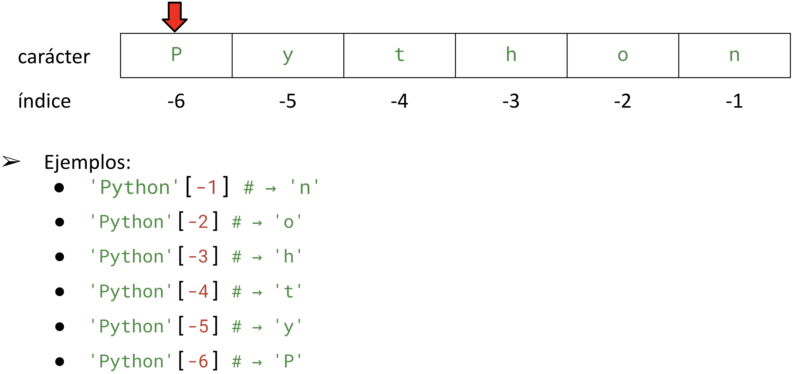
</div></script></section><section  data-markdown><script type="text/template"><!-- .slide: class="has-light-background drop" data-background-color="#f8f8f8" -->
<div class="" style="position: absolute; left: 0px; top: 0px; height: 700px; width: 960px; min-height: 700px; display: flex; flex-direction: column; align-items: center; justify-content: center" absolute="true">

### ¿Qué pasa si se usan índices inválidos?
</div></script></section><section  data-markdown><script type="text/template"><!-- .slide: class="has-light-background drop" data-background-color="#f8f8f8" -->
<div class="" style="position: absolute; left: 0px; top: 0px; height: 700px; width: 960px; min-height: 700px; display: flex; flex-direction: column; align-items: center; justify-content: center" absolute="true">

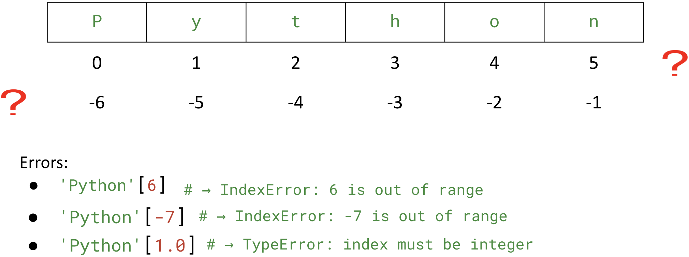
</div></script></section><section  data-markdown><script type="text/template"><!-- .slide: class="has-light-background drop" data-background-color="#f8f8f8" -->
<div class="" style="position: absolute; left: 0px; top: 0px; height: 700px; width: 960px; min-height: 700px; display: flex; flex-direction: column; align-items: center; justify-content: center" absolute="true">

### ¿`IndexError`?


<a href="https://eerosales24.github.io/iph_2026_20/general/errores_comunes/#/33" target="_blank" rel="noopener noreferrer">IndexError</a>
</div></script></section><section  data-markdown><script type="text/template"><!-- .slide: class="has-light-background drop" data-background-color="#f8f8f8" -->
<div class="" style="position: absolute; left: 0px; top: 0px; height: 700px; width: 960px; min-height: 700px; display: flex; flex-direction: column; align-items: center; justify-content: center" absolute="true">

### Conozcamos más **métodos** de la clase `str`
</div></script></section><section  data-markdown><script type="text/template"><!-- .slide: class="has-light-background drop" data-background-color="#f8f8f8" -->
<div class="" style="position: absolute; left: 0px; top: 0px; height: 700px; width: 960px; min-height: 700px; display: flex; flex-direction: column; align-items: center; justify-content: center" absolute="true">

### `str.find()` (1/2)

- Retorna el primer índice 
	- En donde se encuentra el substring dado
- Sintaxis: 
```Python
string.find(substring, start, end)
``` 
- `substring`: Substring a buscar
- `start`: Inicio de búsqueda (opcional: 0)
- `end`: Fin de búsqueda (opcional: Final del string)
</div></script></section><section  data-markdown><script type="text/template"><!-- .slide: class="has-light-background drop" data-background-color="#f8f8f8" -->
<div class="" style="position: absolute; left: 0px; top: 0px; height: 700px; width: 960px; min-height: 700px; display: flex; flex-direction: column; align-items: center; justify-content: center" absolute="true">

### `str.find()` (2/2)

- Retorna el primer indice (de izquierda a derecha) 
	- En donde comienza el substring
		- `-1` si no se encuentra
- Ayuda:  [str.find](https://docs.python.org/3/library/stdtypes.html#str.find)
</div></script></section><section  data-markdown><script type="text/template"><!-- .slide: class="has-light-background drop" data-background-color="#f8f8f8" -->
<div class="" style="position: absolute; left: 0px; top: 0px; height: 700px; width: 960px; min-height: 700px; display: flex; flex-direction: column; align-items: center; justify-content: center" absolute="true">

### Comprendamos mejor el método `str.find()`
</div></script></section><section  data-markdown><script type="text/template"><!-- .slide: class="has-light-background drop" data-background-color="#f8f8f8" -->
<div class="" style="position: absolute; left: 0px; top: 0px; height: 700px; width: 960px; min-height: 700px; display: flex; flex-direction: column; align-items: center; justify-content: center" absolute="true">

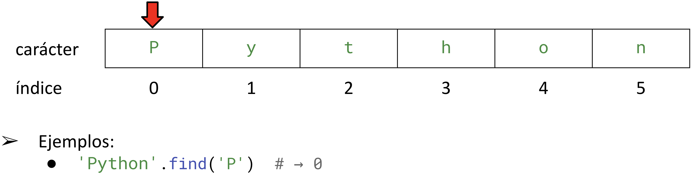
</div></script></section><section  data-markdown><script type="text/template"><!-- .slide: class="has-light-background drop" data-background-color="#f8f8f8" -->
<div class="" style="position: absolute; left: 0px; top: 0px; height: 700px; width: 960px; min-height: 700px; display: flex; flex-direction: column; align-items: center; justify-content: center" absolute="true">

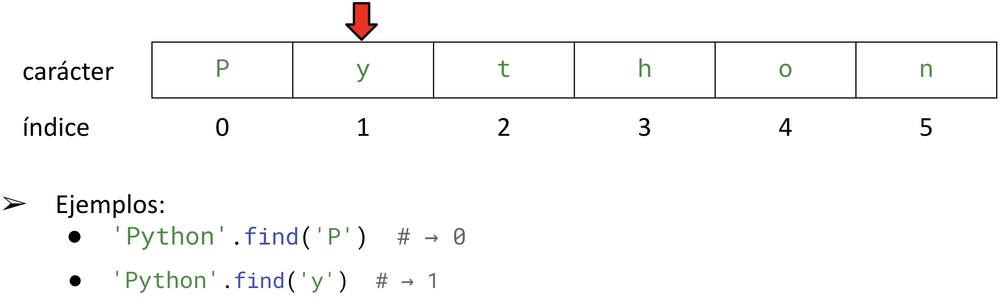
</div></script></section><section  data-markdown><script type="text/template"><!-- .slide: class="has-light-background drop" data-background-color="#f8f8f8" -->
<div class="" style="position: absolute; left: 0px; top: 0px; height: 700px; width: 960px; min-height: 700px; display: flex; flex-direction: column; align-items: center; justify-content: center" absolute="true">

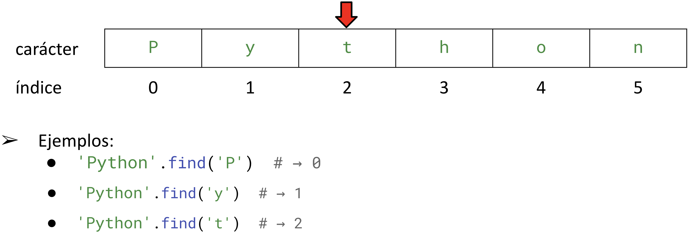
</div></script></section><section  data-markdown><script type="text/template"><!-- .slide: class="has-light-background drop" data-background-color="#f8f8f8" -->
<div class="" style="position: absolute; left: 0px; top: 0px; height: 700px; width: 960px; min-height: 700px; display: flex; flex-direction: column; align-items: center; justify-content: center" absolute="true">

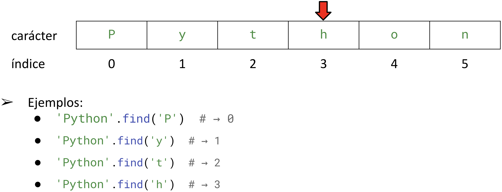
</div></script></section><section  data-markdown><script type="text/template"><!-- .slide: class="has-light-background drop" data-background-color="#f8f8f8" -->
<div class="" style="position: absolute; left: 0px; top: 0px; height: 700px; width: 960px; min-height: 700px; display: flex; flex-direction: column; align-items: center; justify-content: center" absolute="true">

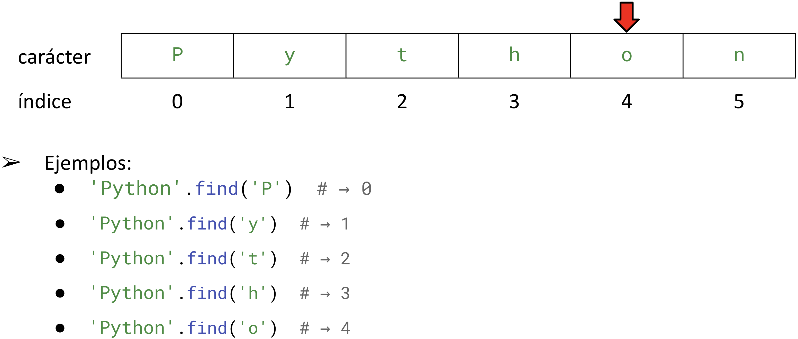
</div></script></section><section  data-markdown><script type="text/template"><!-- .slide: class="has-light-background drop" data-background-color="#f8f8f8" -->
<div class="" style="position: absolute; left: 0px; top: 0px; height: 700px; width: 960px; min-height: 700px; display: flex; flex-direction: column; align-items: center; justify-content: center" absolute="true">

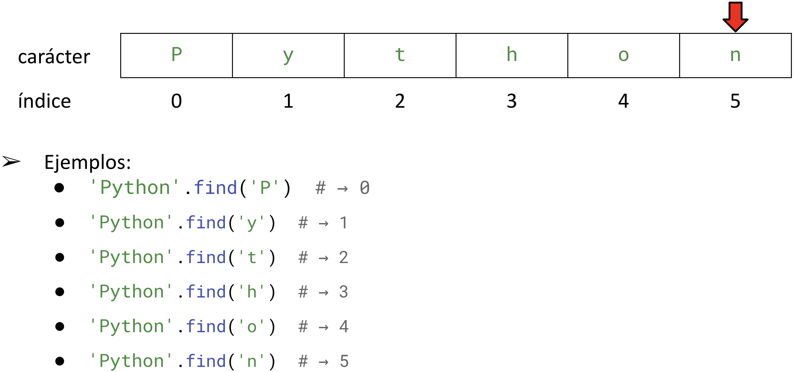
</div></script></section><section  data-markdown><script type="text/template"><!-- .slide: class="has-light-background drop" data-background-color="#f8f8f8" -->
<div class="" style="position: absolute; left: 0px; top: 0px; height: 700px; width: 960px; min-height: 700px; display: flex; flex-direction: column; align-items: center; justify-content: center" absolute="true">

### `str.replace()`

- Retorna una copia del string original
	- Donde las ocurrencias del substring dado
		- Han sido reemplazadas
- Sintaxis: 
```Python
string.replace(old, new, count)
```
- `old`: Substring a reemplazar
- `new`: El string que será el reemplazo
- `count`: Número de ocurrencias a reemplazar (opcional: Todas)
- Ayuda:  [str.replace](https://docs.python.org/3/library/stdtypes.html#str.replace)
</div></script></section><section  data-markdown><script type="text/template"><!-- .slide: class="has-light-background drop" data-background-color="#f8f8f8" -->
<div class="" style="position: absolute; left: 0px; top: 0px; height: 700px; width: 960px; min-height: 700px; display: flex; flex-direction: column; align-items: center; justify-content: center" absolute="true">

### `str.replace()` - Ejemplos

```Python
'banana'.replace('na', '')  # → 'ba'

'banana'.replace('na', '', 1)  # → 'bana' (1ra ocurrencia reemplazada)

'banana'.replace('banana', 'Python')  # → 'Python'

'banana'.replace('NA', '')  # → 'banana' (Sensible a mayúsculas)
```
</div></script></section><section  data-markdown><script type="text/template"><!-- .slide: class="has-light-background drop" data-background-color="#f8f8f8" -->
<div class="" style="position: absolute; left: 0px; top: 0px; height: 700px; width: 960px; min-height: 700px; display: flex; flex-direction: column; align-items: center; justify-content: center" absolute="true">

### `str.startswith()`

- Verifica si el string inicia
	- Con el prefijo dado
- Sintaxis: 
```Python
string.startswith(prefix, start, end)
```
- `prefix`: Prefijo a buscar
- `start`:  Inicio de búsqueda (opcional: 0)
- `end`: Fin de búsqueda (opcional: fin del string)
- Retorna `True` si el string inicia con el prefijo
	- Caso contrario `False`
- Ayuda: [str.starswith](https://docs.python.org/3/library/stdtypes.html#str.startswith)
</div></script></section><section  data-markdown><script type="text/template"><!-- .slide: class="has-light-background drop" data-background-color="#f8f8f8" -->
<div class="" style="position: absolute; left: 0px; top: 0px; height: 700px; width: 960px; min-height: 700px; display: flex; flex-direction: column; align-items: center; justify-content: center" absolute="true">

### `str.startswith()` - Ejemplos

```Python
'Python is fun!'.startswith('Python')  # → True

'Hola mundo'.startswith('Python')  # → False
```
</div></script></section><section  data-markdown><script type="text/template"><!-- .slide: class="has-light-background drop" data-background-color="#f8f8f8" -->
<div class="" style="position: absolute; left: 0px; top: 0px; height: 700px; width: 960px; min-height: 700px; display: flex; flex-direction: column; align-items: center; justify-content: center" absolute="true">

### `str.endswith()`

- Verifica si el string finaliza 
	- Con el sufijo especificado
- Sintaxis: 
```Python
string.endswith(suffix, start, end)
```
- `suffix`: Sufijo a buscar
- `start`: Inicio de búsqueda (opcional: 0)
- `end`: Fin de búsqueda (opcional: Fin del string)
- Retorna `True` si el string finaliza con el sufijo
	- Caso contrario `False`
- Ayuda:  [str.endswith](https://docs.python.org/3/library/stdtypes.html#str.endswith)
</div></script></section><section  data-markdown><script type="text/template"><!-- .slide: class="has-light-background drop" data-background-color="#f8f8f8" -->
<div class="" style="position: absolute; left: 0px; top: 0px; height: 700px; width: 960px; min-height: 700px; display: flex; flex-direction: column; align-items: center; justify-content: center" absolute="true">

### `str.endswith()` -  Ejemplos
    
```Python
'Python is fun!'.endswith('fun!')  # → True

'Hola mundo'.endswith('fun!')  # → False
```
</div></script></section><section  data-markdown><script type="text/template"><!-- .slide: class="has-light-background drop" data-background-color="#f8f8f8" -->
<div class="" style="position: absolute; left: 0px; top: 0px; height: 700px; width: 960px; min-height: 700px; display: flex; flex-direction: column; align-items: center; justify-content: center" absolute="true">

### Otras operaciones sobre `str`


- Existen muchas más <a href="https://docs.python.org/es/3/library/stdtypes.html#string-methods" target="_blank">operaciones</a> que pueden hacerse con `str`
	- Intente por ejemplo adivinar qué hacen las siguientes:

	<br>

```python
str.isalpha()
str.isalnum() 
str.isdigit() 
str.islower() 
str.isspace()
```

<br>


- **TODO:** Revise esta buena práctica asociada:
	- <a href="https://eerosales24.github.io/iph_2026_20/n2/buenas_practicas/#/15" target="_blank">Usar validaciones seguras para métodos de `str`</a>
</div></script></section><section  data-markdown><script type="text/template"><!-- .slide: class="has-light-background drop" data-background-color="#f8f8f8" -->
<div class="" style="position: absolute; left: 0px; top: 0px; height: 700px; width: 960px; min-height: 700px; display: flex; flex-direction: column; align-items: center; justify-content: center" absolute="true">

#  Actividad II

- **Objetivos:**
	- Afianzar mediante la práctica
		- La comprensión de los métodos de los strings estudiados
		- La comprensión de condicionales y operador ternario
</div></script></section><section  data-markdown><script type="text/template"><!-- .slide: class="has-light-background drop" data-background-color="#f8f8f8" -->
<div class="" style="position: absolute; left: 0px; top: 0px; height: 700px; width: 960px; min-height: 700px; display: flex; flex-direction: column; align-items: center; justify-content: center" absolute="true">

###  Actividad II (1/7)

- Cree un archivo llamado: `logica.py`
	- Copie y pegue el siguiente código e implemente el `TODO1`:

```python
import doctest

def tiene_caracteres_prohibidos(cadena: str) -> bool:
    """
    Verifica si el string dado contiene alguno de los caracteres prohibidos,
    estos son: !, @, #, $, %.
    
    Tip: Use operadores de pertenencia o membresía y no es necesario usar
    condicionales (ni operador ternario).

    Args:
        cadena (str): La cadena de entrada.

    Returns:
        bool: True si la cadena tiene los caracteres prohibidos, 
        False en caso contrario. Para el string vacío retorna False.
 
    >>> tiene_caracteres_prohibidos('')  # Caso string vacío
    False
    >>> tiene_caracteres_prohibidos('Mi correo es usuario@uniandes.edu.co!')  # Caso contiene caracteres prohibidos
    True
    >>> tiene_caracteres_prohibidos('Python')  # Caso no tiene caracteres prohibidos
    False
    """
    # TODO1: Implemente la función tal y como se describe en la documentación

#doctest.run_docstring_examples(tiene_caracteres_prohibidos, globals(), verbose=True)
```
</div></script></section><section  data-markdown><script type="text/template"><!-- .slide: class="has-light-background drop" data-background-color="#f8f8f8" -->
<div class="" style="position: absolute; left: 0px; top: 0px; height: 700px; width: 960px; min-height: 700px; display: flex; flex-direction: column; align-items: center; justify-content: center" absolute="true">

###  Actividad II (2/7)

- En `logica.py`
	- Copie y pegue el siguiente código e implemente el `TODO2`:

```python
def es_url_segura(url: str) -> bool:
    """
    Verifica si la URL dada comienza con 'https://'. 
    La comparación es insensible a mayúsculas y minúsculas.

    Tip: No es necesario usar condicionales (ni operador ternario).

    Args:
        url (str): La URL a verificar.

    Returns:
        bool: True si la url es segura, False en caso contrario. 
        Para el string vacío retorna False.

    >>> es_url_segura('')  # Caso string vacío
    False
    >>> es_url_segura('https://ejemplo.com')  # Caso URL segura (minúsculas)
    True
    >>> es_url_segura('HTTPS://ejemplo.com')  # Caso URL segura (mayúsculas)
    True
    >>> es_url_segura('http://ejemplo.com')  # Caso URL insegura
    False
    """
    # TODO2: Implemente la función tal y como se describe en la documentación

#doctest.run_docstring_examples(es_url_segura, globals(), verbose=True)
```
</div></script></section><section  data-markdown><script type="text/template"><!-- .slide: class="has-light-background drop" data-background-color="#f8f8f8" -->
<div class="" style="position: absolute; left: 0px; top: 0px; height: 700px; width: 960px; min-height: 700px; display: flex; flex-direction: column; align-items: center; justify-content: center" absolute="true">

###  Actividad II (3/7)

- En `logica.py`
	- Copie y pegue el siguiente código e implemente el `TODO3`:

```python
def tiene_extension_valida(nombre_archivo: str, extension: str) -> bool:
    """
    Verifica si el nombre de archivo dado tiene la extensión especificada. 
    La comparación es insensible a mayúsculas y minúsculas.
    Nota: *Debe* usar el operador ternario.

    Args:
        nombre_archivo (str): El nombre del archivo a verificar.
        extension (str): La extensión a validar.

    Returns:
        bool: True si el archivo tiene la extensión especificada, 
        False en caso contrario.
            Si se provee una extensión vacía, debe retornar False.

    >>> tiene_extension_valida('','.TXT')  # Caso nombre de archivo vacío 
    False
    >>> tiene_extension_valida('archivo','')  # Caso extensión vacía
    False
    >>> tiene_extension_valida('archivo.txt','.TXT')  # Caso extensión coincide (minúsculas)
    True
    >>> tiene_extension_valida('archivo.txt','.txt')  # Caso extensión coincide (minúsculas)
    True
    >>> tiene_extension_valida('archivo.jpg','.txt')  # Caso extensión no coincide
    False
    """
    # TODO3: Implemente la función tal y como se describe en la documentación
    
#doctest.run_docstring_examples(tiene_extension_valida, globals(), verbose=True)
```
</div></script></section><section  data-markdown><script type="text/template"><!-- .slide: class="has-light-background drop" data-background-color="#f8f8f8" -->
<div class="" style="position: absolute; left: 0px; top: 0px; height: 700px; width: 960px; min-height: 700px; display: flex; flex-direction: column; align-items: center; justify-content: center" absolute="true">

###  Actividad II (4/7)

- En `logica.py`
	- Copie y pegue el siguiente código e implemente el `TODO4`:


```python
def limpiar_etiqueta(texto: str) -> str:
    """
    Limpia una etiqueta de producto reemplazando separadores y eliminando
    caracteres no deseados. Los caracteres no deseados que elimina son: '#'.
    Además, reemplaza '-' y '_' por espacios para mejorar la legibilidad.

    Args:
        texto (str): Cadena que representa la etiqueta original del producto.

    Returns:
        str: Etiqueta limpia y más legible.

    >>> limpiar_etiqueta("JABON-LIQUIDO__LAVANDA##")  # Caso con guiones, guiones bajos y caracteres no deseados
    'JABON LIQUIDO LAVANDA'
    
    >>> limpiar_etiqueta("ARROZ###")  # Caso con solo caracteres no deseados al final
    'ARROZ'
    
    >>> limpiar_etiqueta("__LECHE-DESLACTOSADA__")  # Caso con separadores al inicio y al final
    ' LECHE DESLACTOSADA '
    
    >>> limpiar_etiqueta("CAFE__NEGRO-SIN_AZUCAR")  # Caso mixto con varios separadores combinados
    'CAFE NEGRO SIN AZUCAR'
    """
    # TODO4: Implemente la función tal y como se describe en la documentación
    
#doctest.run_docstring_examples(limpiar_etiqueta, globals(), verbose=True)
```
</div></script></section><section  data-markdown><script type="text/template"><!-- .slide: class="has-light-background drop" data-background-color="#f8f8f8" -->
<div class="" style="position: absolute; left: 0px; top: 0px; height: 700px; width: 960px; min-height: 700px; display: flex; flex-direction: column; align-items: center; justify-content: center" absolute="true">

### Prosiga únicamente si ya implementó los `TODO1` al `TODO4`
</div></script></section><section  data-markdown><script type="text/template"><!-- .slide: class="has-light-background drop" data-background-color="#f8f8f8" -->
<div class="" style="position: absolute; left: 0px; top: 0px; height: 700px; width: 960px; min-height: 700px; display: flex; flex-direction: column; align-items: center; justify-content: center" absolute="true">

###  Actividad II (5/7)

1. Revise si sus funciones cumplen con todas las siguientes buenas prácticas obligatorias del curso:

	- <a href="https://eerosales24.github.io/iph_2026_20/n2/buenas_practicas/#/3" target="_blank">Usar nombres interrogativos en funciones booleanas</a>
	
	-  <a href="https://eerosales24.github.io/iph_2026_20/n2/buenas_practicas/#/5" target="_blank">Retornar directamente expresiones booleanas</a>


	 - <a href="https://eerosales24.github.io/iph_2026_20/n2/buenas_practicas/#/8" target="_blank">Usar operadores relacionales compuestos</a>


	- <a href="https://eerosales24.github.io/iph_2026_20/n2/buenas_practicas/#/9" target="_blank">Nunca interrumpir un condicional</a>


	<br>

2. Si una función no cumple todas las anteriores buenas prácticas
	- Por favor corrija su implementación
</div></script></section><section  data-markdown><script type="text/template"><!-- .slide: class="has-light-background drop" data-background-color="#f8f8f8" -->
<div class="" style="position: absolute; left: 0px; top: 0px; height: 700px; width: 960px; min-height: 700px; display: flex; flex-direction: column; align-items: center; justify-content: center" absolute="true">

###  Actividad II (6/7)

- Responda a la siguiente pregunta:
	- ¿Cuál es el resultado de ejecutar el siguiente programa?


```python
def limpiar_etiqueta(texto: str) -> str:
    """
    Limpia una etiqueta de producto reemplazando separadores y eliminando
    caracteres no deseados. Los caracteres no deseados que elimina son: '#'.
    Además, reemplaza '-' y '_' por espacios para mejorar la legibilidad.

    Args:
        texto (str): Cadena que representa la etiqueta original del producto.

    Returns:
        str: Etiqueta limpia y más legible.
    """
    texto = texto.replace("-", " ")
    texto = texto.replace("_", " ")
    texto = texto.replace("  ", " ")
    texto = texto.replace("#", "")
    return texto


def procesar_etiqueta(etiqueta: str) -> str:
    """
    Procesa una etiqueta verificando si es None o si está vacía antes de limpiarla.

    Args:
        etiqueta (str): Etiqueta original del producto.

    Returns:
        str: Etiqueta limpia o un mensaje de error.
    """
    if etiqueta is None:  # Comparación con None (caso inválido)
        return "Error: La etiqueta no existe"

    if etiqueta == "":  # Comparación entre strings (cadena vacía)
        return "Error: La etiqueta está vacía"

    etiqueta_limpia = limpiar_etiqueta(etiqueta)

    if etiqueta_limpia == "":  # Comparación entre strings luego de limpiar
        return "Error: La etiqueta quedó vacía después de limpiar"

    return etiqueta_limpia


print(procesar_etiqueta(None))
print(procesar_etiqueta(""))
print(procesar_etiqueta("###"))
print(procesar_etiqueta("JABON-LIQUIDO__LAVANDA##"))
```
</div></script></section><section  data-markdown><script type="text/template"><!-- .slide: class="has-light-background drop" data-background-color="#f8f8f8" -->
<div class="" style="position: absolute; left: 0px; top: 0px; height: 700px; width: 960px; min-height: 700px; display: flex; flex-direction: column; align-items: center; justify-content: center" absolute="true">

###  Actividad II (7/7)

- **Solución:**

```plaintext
print(procesar_etiqueta(None))  
# → Error: La etiqueta no existe

print(procesar_etiqueta(""))  
# → Error: La etiqueta está vacía

print(procesar_etiqueta("###"))  
# → Error: La etiqueta quedó vacía después de limpiar

print(procesar_etiqueta("JABON-LIQUIDO__LAVANDA##"))  
# → JABON LIQUIDO LAVANDA
```

<br>

- Finalmente, revise las siguientes buenas prácticas:


	- <a href="https://eerosales24.github.io/iph_2026_20/n2/buenas_practicas/#/11" target="_blank">Comparar correctamente con `None`</a>


	- <a href="https://eerosales24.github.io/iph_2026_20/n2/buenas_practicas/#/13" target="_blank">Comparar correctamente con literales</a>
</div></script></section><section  data-markdown><script type="text/template"><!-- .slide: class="has-light-background drop" data-background-color="#f8f8f8" -->
<div class="" style="position: absolute; left: 0px; top: 0px; height: 700px; width: 960px; min-height: 700px; display: flex; flex-direction: column; align-items: center; justify-content: center" absolute="true">

### Entrega (1/2)

1. Comprima en un archivo `.zip` el archivo:
	- `logica.py`
</div></script></section><section  data-markdown><script type="text/template"><!-- .slide: class="has-light-background drop" data-background-color="#f8f8f8" -->
<div class="" style="position: absolute; left: 0px; top: 0px; height: 700px; width: 960px; min-height: 700px; display: flex; flex-direction: column; align-items: center; justify-content: center" absolute="true">

### Entrega (2/2)

2. Haga el envío del `.zip` en  [Bloque Neón](https://bloqueneon.uniandes.edu.co/)
	- Vaya a **"Actividades"**
		- **"N2-L2"**
</div></script></section><section  data-markdown><script type="text/template"><!-- .slide: class="has-light-background drop" data-background-color="#f8f8f8" -->
<div class="" style="position: absolute; left: 0px; top: 0px; height: 700px; width: 960px; min-height: 700px; display: flex; flex-direction: column; align-items: center; justify-content: center" absolute="true">

#  Actividad III

- **Objetivos:**
	- Afianzar la práctica de condicionales y operaciones con strings
</div></script></section><section  data-markdown><script type="text/template"><!-- .slide: class="has-light-background drop" data-background-color="#f8f8f8" -->
<div class="" style="position: absolute; left: 0px; top: 0px; height: 700px; width: 960px; min-height: 700px; display: flex; flex-direction: column; align-items: center; justify-content: center" absolute="true">

###  Actividad III (1/2)

- **N2 - Tarea 2**:

	- En [senecode](https://senecode.virtual.uniandes.edu.co/) ya está disponible la segunda y última tarea de N2:
	
		- Complete todos los siguientes ejercicios:
			- **`Materias favoritas`**
			- **`Movimiento robótico`**
			- **`Picas y Fijas: contar fijas`**
			- **`Encriptador de mensajes`**
</div></script></section><section  data-markdown><script type="text/template"><!-- .slide: class="has-light-background drop" data-background-color="#f8f8f8" -->
<div class="" style="position: absolute; left: 0px; top: 0px; height: 700px; width: 960px; min-height: 700px; display: flex; flex-direction: column; align-items: center; justify-content: center" absolute="true">

###  Actividad III (2/2)

- Fecha límite de entrega:
	- **Jueves 17 de septiembe 11:00pm**
	- Recuerde: Esta tarea es un **evaluable** de Nivel 2
</div></script></section><section  data-markdown><script type="text/template"><!-- .slide: class="has-light-background drop" data-background-color="#f8f8f8" -->
<div class="" style="position: absolute; left: 0px; top: 0px; height: 700px; width: 960px; min-height: 700px; display: flex; flex-direction: column; align-items: center; justify-content: center" absolute="true">

# Fin de N2-L2

- Si no alcanzó a terminar el laboratorio
	- Debe completar el laboratorio en su tiempo de 
		- **Trabajo individual semanal** de IP Honores


<br>

 [<i class="fas fa-home  fa-3x"></i>](https://eerosales24.github.io/iph_2026_20/#)
</div></script></section></div>
    </div>

    <script src="dist/reveal.js"></script>

    <script src="plugin/markdown/markdown.js"></script>
    <script src="plugin/highlight/highlight.js"></script>
    <script src="plugin/zoom/zoom.js"></script>
    <script src="plugin/notes/notes.js"></script>
    <script src="plugin/math/math.js"></script>
	<script src="plugin/mermaid/mermaid.js"></script>
	<script src="plugin/chart/chart.min.js"></script>
	<script src="plugin/chart/plugin.js"></script>
	<script src="plugin/customcontrols/plugin.js"></script>

    <script>
      function extend() {
        var target = {};
        for (var i = 0; i < arguments.length; i++) {
          var source = arguments[i];
          for (var key in source) {
            if (source.hasOwnProperty(key)) {
              target[key] = source[key];
            }
          }
        }
        return target;
      }

	  function isLight(color) {
		let hex = color.replace('#', '');

		// convert #fff => #ffffff
		if(hex.length == 3){
			hex = `${hex[0]}${hex[0]}${hex[1]}${hex[1]}${hex[2]}${hex[2]}`;
		}

		const c_r = parseInt(hex.substr(0, 2), 16);
		const c_g = parseInt(hex.substr(2, 2), 16);
		const c_b = parseInt(hex.substr(4, 2), 16);
		const brightness = ((c_r * 299) + (c_g * 587) + (c_b * 114)) / 1000;
		return brightness > 155;
	}

	var bgColor = getComputedStyle(document.documentElement).getPropertyValue('--r-background-color').trim();
	var isLight = isLight(bgColor);

	if(isLight){
		document.body.classList.add('has-light-background');
	} else {
		document.body.classList.add('has-dark-background');
	}

      // default options to init reveal.js
      var defaultOptions = {
        controls: true,
        progress: true,
        history: true,
        center: true,
        transition: 'default', // none/fade/slide/convex/concave/zoom
        plugins: [
          RevealMarkdown,
          RevealHighlight,
          RevealZoom,
          RevealNotes,
          RevealMath.MathJax3,
		  RevealMermaid,
		  RevealChart,
		  RevealCustomControls,
        ],


    	allottedTime: 120 * 1000,

		mathjax3: {
			mathjax: 'plugin/math/mathjax/tex-mml-chtml.js',
		},
		markdown: {
		  gfm: true,
		  mangle: true,
		  pedantic: false,
		  smartLists: false,
		  smartypants: false,
		},

		mermaid: {
			theme: isLight ? 'default' : 'dark',
		},

		customcontrols: {
			controls: [
			]
		},
      };

      // options from URL query string
      var queryOptions = Reveal().getQueryHash() || {};

      var options = extend(defaultOptions, {"width":960,"height":700,"margin":"0.025","minScale":"0.1","maxScale":"2.0","controls":"true","controlsLayout":"bottom-right","progress":"true","slideNumber":"true","center":"false","transition":"slide","transitionSpeed":"default"}, queryOptions);
    </script>

    <script>
      Reveal.initialize(options);
    </script>
  </body>

  <!-- created with Advanced Slides -->
</html>
